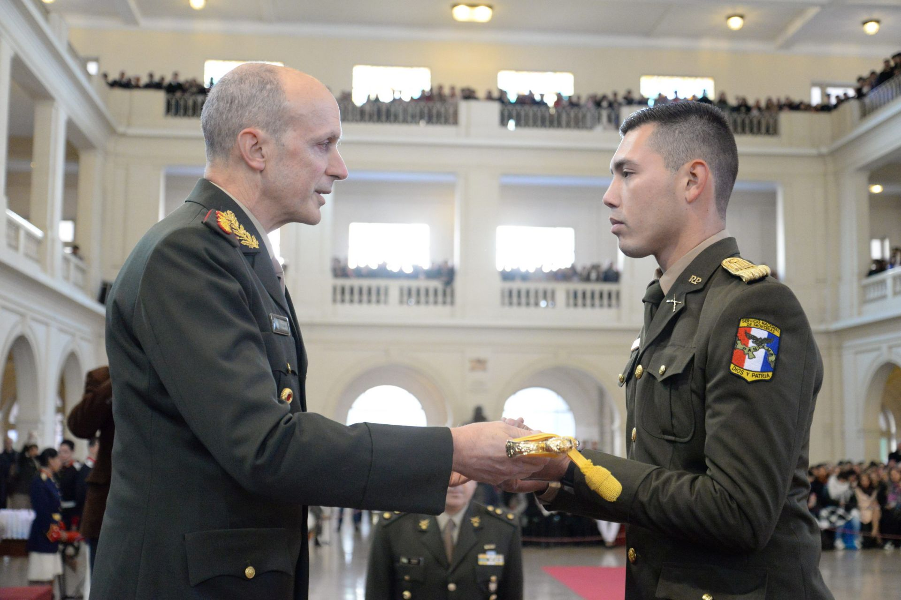
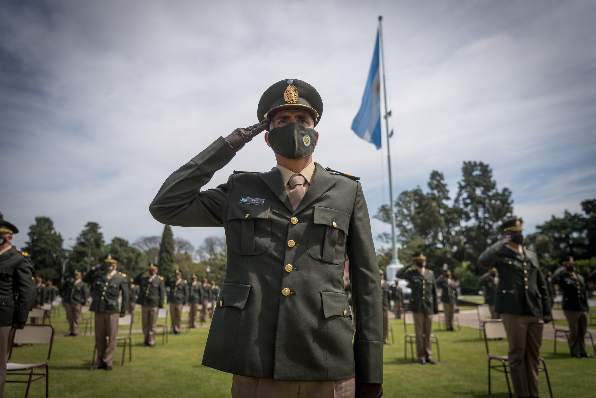
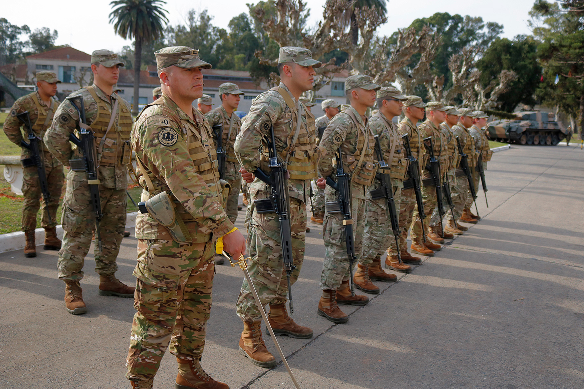

Te invitamos a unirte a una Fuerza Armada con más de 200 años de historia, cuyo compromiso permanece intacto: defender a la Patria, la Soberanía Nacional y a los ciudadanos argentinos. Formar parte del Ejército Argentino significa integrarse a una institución con tradición, vocación de servicio y valores profundamente arraigados. Ofrecemos tres caminos de carrera: Oficial, Suboficial y Soldado Voluntario, que brindan formación profesional, disciplina y oportunidades de desarrollo. Para avanzar en ellos, deberás estudiar, entrenarte con dedicación y mantener un profundo respeto por los símbolos patrios y por los valores que guiaron al General José de San Martín. Ser parte del Ejército es asumir un compromiso con el país y con su gente, sirviendo con honor y responsabilidad.
Vas a formarte en conducción, liderazgo y gestión militar, desarrollando las competencias necesarias para desempeñarte en distintos niveles de la organización y cumplir con misiones operacionales en diversos entornos. La carrera tiene una duración de 4 años y combina formación académica, entrenamiento físico y prácticas profesionales. Al finalizar, egresás como subteniente, obteniendo además un título universitario que respalda tu preparación integral.
Vas a capacitarte para cumplir misiones operacionales en distintos ambientes geográficos, desarrollando habilidades técnicas, disciplina y preparación física acordes a las exigencias de la función militar. La carrera tiene una duración de 2 años, durante los cuales recibirás instrucción profesional y entrenamiento especializado. Al finalizar tu formación, egresás como cabo, listo para integrar unidades operativas y desempeñarte con responsabilidad dentro de la fuerza.
Vas a capacitarte para desempeñar roles específicos y ejecutivos, según las necesidades del organismo al que ingreses, adquiriendo habilidades técnicas y profesionales orientadas a tareas operativas, administrativas o de apoyo directo a la misión institucional. Cada trayectoria ofrece formación práctica y teórica para que puedas cumplir tus funciones con eficiencia y responsabilidad. Ingresá para conocer los requisitos y completar tu inscripción.
